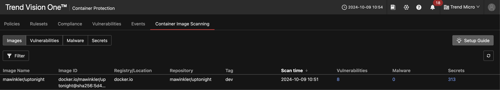

Scenario: Container Image Scanning for Vulnerabilities, Malware, and Secrets¶
Prerequisites¶
- Vision One Container Security Artifact Scanner API-Key with the following permissions:
- Cloud Security Operations
- Container Protection
- Run artifact scan
- Container Protection
- Cloud Security Operations
Ensure to have the latest tmas deployed:
Scan Images¶
First, set the Artifact Scanner API-Key as an environment variable:
Note: tmas defaults to the Vision One service region
us-east-1. If your Vision One is serviced from any other region you need to add the--regionflag to the scan request.Valid regions:
[ap-southeast-2 eu-central-1 ap-south-1 ap-northeast-1 ap-southeast-1 us-east-1]
The tmas tools supports three scan variants:
- malware, -M Perform a malware scan on an image artifact
- secrets, -S Perform a secrets scan on an artifact
- vulnerabilities, -V Perform a vulnerability scan on an artifact
You can either choose an individual scan type or combine multiple via flags.
To easily scan an image for vulnerabililies run
# Service region us-east-1
tmas scan vulnerabilities docker:nginx:latest
# short
tmas scan -V docker:nginx:latest
# Service region eu-central-1
tmas scan vulnerabilities docker:nginx:latest --region eu-central-1
Scanning an image for vulnerabilities and malware simultaneously is as easy as above
At the time of writing, the second scan should find 137 vulnerabilities and one malware:
{
"vulnerabilities": {
"totalVulnCount": 137,
"criticalCount": 0,
"highCount": 4,
"mediumCount": 65,
"lowCount": 61,
"negligibleCount": 7,
"unknownCount": 0,
"overriddenCount": 0,
"findings": {
...
"malware": {
"scanResult": 1,
"findings": [
{
"layerDigest": "sha256:d5fafe98396dfece28a75fc06ef876bf2e9014d62d908f8296a925bab92ab4b9",
"layerDiffID": "sha256:d5fafe98396dfece28a75fc06ef876bf2e9014d62d908f8296a925bab92ab4b9",
"fileName": "eicarcom2.zip",
"fileSize": 308,
"fileSHA256": "sha256:e1105070ba828007508566e28a2b8d4c65d192e9eaf3b7868382b7cae747b397",
"foundMalwares": [
{
"fileName": "__Zoq9GPNzgoaVyXYSKgniGj__",
"malwareName": "OSX_EICAR.PFH"
}
]
}
],
"scanID": "53e856d2-6385-46f7-b661-21d01b3604a2",
"scannerVersion": "1.0.0-66"
}
}
Another malware example might be this:
Scanning for secrets is very similar:
False Positives¶
Here, we're going to tackle false positives in the scan results
Secrets¶
Depending on the programming language used in a containerized app and how it got containerized tmas will likely discover lots of generic secrets. These false positives are usually found within unit tests or examples included in the language runtime distribution.
Let's play with one of my apps, UpTonight.
Running a scan on my dev image (10/09/2024):

So, there are apparently 79 secrets...
If we want to inspect a specific finding we need to dissect the container image into it's layers. Make sure to use the correct image digest reported by Vision One.
docker pull docker.io/mawinkler/uptonight@sha256:b152f6bce0df2a9bfadc5b435a094e1bd91611a9ba7040808c8c5a32b2fc6618
docker save -o uptonight.tar docker.io/mawinkler/uptonight@sha256:b152f6bce0df2a9bfadc5b435a094e1bd91611a9ba7040808c8c5a32b2fc6618
The above command saves the image including all of its layers into a tar archive. Extracting this archive we get the following structure:
.
├── blobs
│ └── sha256
│ ├── 2efecd3a4b7c7c8f3a21f437984e8ec09342bf55c48a81215007b00cbf6f6ec9
│ ├── 32b517b1d73ed10c4adbd50e64d5f2d61712ccc6e4fb6ce39005f159e23fe1ac
│ ├── 386776cc98d16d99a5bd775dc73c6fee6bd9bdd5e379e30a1d14157012a5432e
│ ├── 48e6d4ad1ab793bf30ac91047f884b34d331698c6c8ba688956ce2463ad59135
│ ├── 4f49f9e01d50b4900868481954bd38c905ba3d3a3be6db2df3e78930becc04ba
│ ├── 51c6a8652010bf8563a76c609536f254293f170248dd6cf926ca48b72f5eaaf8
│ ├── 63c88cab4a2898393f7cc92e0c99c9d0fe85b6dd8958f1662d1aa2d279717784
│ ├── 7da81db4d2f8fbdb34206fdfcde3a883b94b59aaf28df2d5fcf737a4a6f154cd
│ ├── 7f66fa794225f77a772f98a2c9ed4f63aebd658d3a09dd533cd7d8b259364d68
│ ├── 83ff8a522845857392c79290e3f9ab594d347f21ae72dc5a9732965e33bc6dbe
│ ├── b30379741c872a6f008e915694ec2449708f8b907954f18d4b882103b27fbe45
│ ├── b82d9de2867dd7879d9c1b530b77cd553f21d1baca9b20b133e50f75fc2ff6bf
│ ├── ba2c96a1cc369c328320f8d9d3b4df81012580d0abe85e0e4b4eb458322d7283
│ ├── ba8dbc5b24b59c2e6aff3639f32c5402af5e30be686342d08925ad852bd8c7c4
│ ├── bca81598344e69c99a6ff00b66d09117888131d67cc0aae65d49d4b241c7c043
│ ├── cfd6a0a02c40bdeff86ac669b87d9e1224aa703200f066bab494b0a76846dc16
│ ├── d45039a6283cffb3dfa0d8341a027fc88bfbe42398d05b173ea2d281f6030821
│ └── ea7ca101baa01ced632efd5613d87deda6b4c3914a9676f1fbead657ae935b24
├── index.json
├── manifest.json
├── oci-layout
└── uptonight.tar
2 directories, 22 files
Now, let us inspect some files with potential secret findings.
Facebook Page Access Token
Secret type: facebook-page-access-token
Description: Discovered a Facebook Page Access Token, posing a risk of unauthorized access to Facebook accounts and personal data exposure.
Image name: mawinkler/uptonight
Image ID: docker.io/mawinkler/uptonight@sha256:b152f6bce0df2a9bfadc5b435a094e1bd91611a9ba7040808c8c5a32b2fc6618
Layer ID: sha256:ba8dbc5b24b59c2e6aff3639f32c5402af5e30be686342d08925ad852bd8c7c4
Location path: /var/lib/dpkg/available
...
Secret: eaac******26a7
Extract the file:
tar xf blobs/sha256/ba8dbc5b24b59c2e6aff3639f32c5402af5e30be686342d08925ad852bd8c7c4 var/lib/dpkg/available
When opening the file and seaching for the discovered secret we can proove that it's a false positive.
Package: libapt-pkg6.0t64
Architecture: amd64
Version: 2.7.14build2
Multi-Arch: same
Priority: important
Build-Essential: yes
Section: libs
Source: apt
Origin: Ubuntu
Maintainer: Ubuntu Developers <ubuntu-devel-discuss@lists.ubuntu.com>
Original-Maintainer: APT Development Team <deity@lists.debian.org>
Bugs: https://bugs.launchpad.net/ubuntu/+filebug
Installed-Size: 3244
Provides: libapt-pkg (= 2.7.14build2), libapt-pkg6.0 (= 2.7.14build2)
Depends: libbz2-1.0, libc6 (>= 2.38), libgcc-s1 (>= 3.3.1), libgcrypt20 (>= 1.10.0), liblz4-1 (>= 0.0~r127), liblzma5 (>= 5.1.1alpha+20120614), libstdc++6 (>= 13.1), libsystemd0 (>= 221), libudev1 (>= 183), libxxhash0 (>= 0.7.1), libzstd1 (>= 1.5.5), zlib1g (>= 1:1.2.2.3)
Recommends: apt (>= 2.7.14build2)
Conflicts: libnettle8 (<< 3.9.1-2.2~)
Breaks: appstream (<< 0.9.0-3~), apt (<< 1.6~), aptitude (<< 0.8.9), dpkg (<< 1.20.8), libapt-inst1.5 (<< 0.9.9~), libapt-pkg6.0 (<< 2.7.14build2)
Replaces: libapt-pkg6.0
Filename: pool/main/a/apt/libapt-pkg6.0t64_2.7.14build2_amd64.deb
Size: 985310
MD5sum: 0bfb233537666f4104b02f399c3f13cc
SHA1: d06e76be3cfc7130dd9becff690f4173bbda2089
SHA256: 3915b0cdfbaae551d9089400f47be749b89c30914985982b39e57fd2016be852
SHA512: 0a304cbf749e8f64a8a543a83112a4ddeff4ca3b2f01e88fea54a322998e2dd774d1a5c6eeedd967a550d4e4ffcdfb33ba08941e158ecdd49b85afde55bf6796
Description: package management runtime library
Task: cloud-minimal, minimal, server-minimal
Description-md5: eaacd63db236f47bdcc19e3bea7026a7
AWS credentials
Similar to the above...
Layer ID:
sha256:ba2c96a1cc369c328320f8d9d3b4df81012580d0abe85e0e4b4eb458322d7283
Location path:
/root/.local/lib/python3.12/site-packages/PIL/ImageFont.py
Secret: AK******0A
Going through this Python file we can discover the secret within the base64 encoded FreeType font. So again a false positive.
🎉 Success 🎉